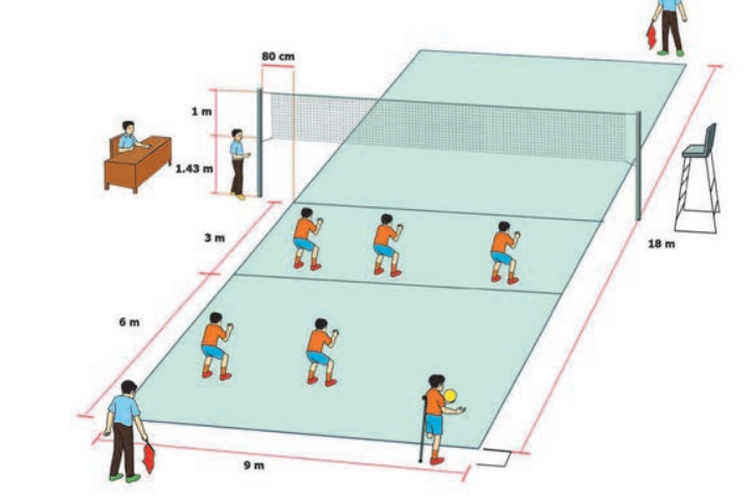

<- Kembali
Bola Voli
2 Materi
Pengertian
Pengertian Permainan bola voli adalah olah raga yang dimainkan oleh dua tim dalam setiap lapangan dengan dipisahkan oleh sebuah net. Tujuan dari permainan adalah melewatkan bola di atas net agar dapat jatuh menyentuh lantai lawan. Setiap tim dapat memainkan tiga kali pantulan untuk mengembalikan bola, melambungkan dan memantulkan bola ke udara harus mempergunakan bagian tubuh mana saja (asalkan sentuhan/ pantulannya harus sempurna), Jumlah pemain dalam 1 regu adalah 6 orang.
Sejarah
Permainan bola voli pertama kali diciptakan tahun 1895 oleh William G. Morgan. Beliau adalah seorang pembina pendidikan jasmani pada Young Man Christian Association (YMCA) di kota Hollyoke, Massachusset, Amerika Serikat. Permainan ini asal mulanya disebut dengan "Mintonette:, di mana bentuk permainannya menyerupai badminton dan jumlah pemain tidak dibatasi, karena sesuai dengan tujuan dari permainan itu untuk mengembangkan kesegaran jasmani.
Tahun 1900 permainan bola voli sudah di kenal di India yang di bawa oleh seorang ahli pendidikan jasmani dari YCMA yang bernama De Gray. Sedangkan di Indonesia sudah dikenal sejak tahun 1928 yang dibawa oleh guru-guru Belanda yang mengajar di H.B.S dan A.M.S. Sejak PON II di Jakarta tahun 1951 dan sampai sekarang bola voli termasuk cabang olah raga yang resmi di pertandingkan. Induk organisasi bola voli di Indonesia adalah PBVSI (Persatuan Bola Voli Seluruh Indonesia) yang kongres I dilaksanakan di Jakarta, tanggal 30 Mei 1955. Namun PBVSI didirikan pada tanggal 22 Januari 1955 bersamaan dengan dilangsungkan kejuaraan bola voli yang pertama.
Sarana dan Peralatan
a. Bola
* Keliling : 65-67 cm
* Tekanan : 294,3-318,82 hpa
* Berat : 200-280 gram
b. Lapangan Bola Voli
